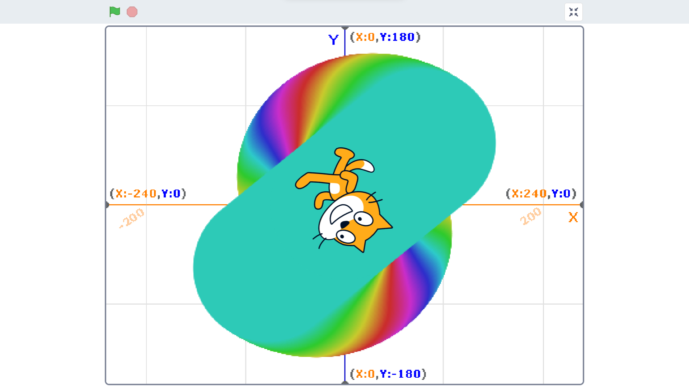

1-1 サイエンスアート

1.内容
スクラッチを使って線を書くプログラムを作った。スプライトが回転しながら色を変えながら線を太くしながら線を描く。最初にペンで書かれたものを全て消し、
ペンの太さを8にして座標を(0,0)にしたあとペンを下ろしたあとに100歩動かして、-200歩動かして、100歩動かして5度回してペンの色と太さを1ずつ変えるという動作を300回繰り返す。
最後にペンを上げる。
2.感想
数値次第でScratchでもきれいな図形が描けるのだなと知った。1ずつ色を変化させることでグラデーションのような見た目になり、
回転の角度の値も小さくすればカラーパレットのような全色を表示した円が描けると思う。また、プログラムを作成する中で思った通りに動作しないときがあり、
描画する範囲外にスプライトは移動できないなどの理由を見つけるのが楽しかった。